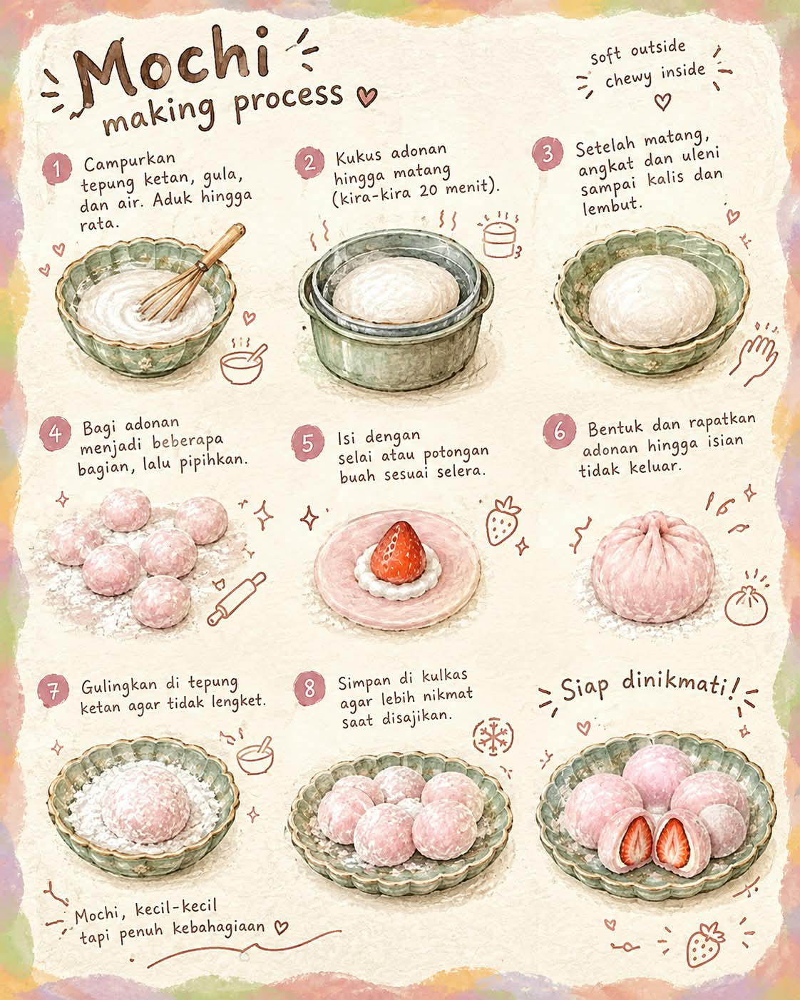

Mochi Daifuku
Media Usaha


It's time to go into a castle
Nada uji singkat memastikan elemen audio dan kontrol browser dapat diperiksa.

Nada uji singkat memastikan elemen audio dan kontrol browser dapat diperiksa.